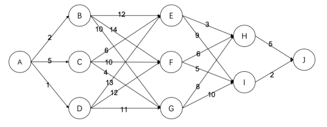

一、单项选择题(共15题，每题2分，共计30分；每题有且仅有一个正确选项)
| 1. | 在Linux系统终端中，用于列出当前目录下所含的文件和子目录的命令为（）。 |
|---|
| 2. | 二进制数001010102和000101102的和为（）。 |
|---|
| 3. | 在程序运行过程中，如果递归调用的层数过多，可能会由于（）引发错我。 |
|---|
| 4. | 以下排序方法中，（）是不稳定的。 |
|---|
| 5. | 以比较为基本运算，对于2n个数，同时找到最大值和最小值，最坏情况下需要的最小的比较次数为（）。 |
|---|
| 6. | 现有一个地址区间为0~10的哈希表，对于出现冲突情况，会往后找第一个空的地址存储(到10冲突了就从0开始往后)，现在要依次存储(0,1,2,3,4,5,6,7)，哈希函数为h(x)=x2 mod 11。请问7存储在哈希表哪个地址中（）。 |
|---|
| 7. | G是一个非连通简单无向图(没有自环和重边)，共有36条边，则该图至少有（）个点。 |
|---|
| 8. | 令根节点的高度为1，则一棵含有2021个节点的二叉树高度至少为（）。 |
|---|
| 9. | 前序遍历和中序遍历相同的二叉树为且仅为（）。 |
|---|
| 10. | 定义一种字符串操作为交换相邻两个字符。将“DACFEB”变为“ABCDEF”最少需要（）次上述操作。 |
|---|
| 11. | 有如下递归代码
solve(t,n):
if t=1 return 1
else return 5*solve(t-1,n) mod n
则solve(23,23)的结果为（）。
|
|---|
| 12. | 斐波那契数列的定义为：F1=1，F2=1，Fn=Fn-1+Fn-2(n>=3)。现在用如下程序来计算斐波那契数列的第n项，其时间复杂度为（）。
F(n):
if n<=2 return 1
else return F(n-1) + F(n-2)
|
|---|
| 13. | 有8个苹果从左到右排成一排，你要从中挑选至少一个苹果，并且不能同时挑选相邻的两个苹果，一共有（）种方案。 |
|---|
| 14. | 设一个三位数n=abc，a，b，c均为1~9之间的整数，若a、b、c作为三角形的三条边可以构成等腰三角形(包括等边)，则这样的n有（）个。 |
|---|
| 15. | 有如下的有向图，节点为A,B,...,J，其中每条边的长度都标在图中。则节点A到节点J的最短路径长度为（）。
 |
|---|
二、阅读程序（程序输入不超过数组或字符串定义的范围；判断题正确填✔，错误填✖;除特殊说明外，判断题1.5分，选择题3分，共计40分)
| (1)nbsp; |
|---|
01 #include |
| 假设输入的所有数的绝对值都不超过1000，完成下面的判断题和单选题: |
| 判断题 |
| 16. | 将第21行中t的类型声明从int改为double，不会影响程序运行的结果。（） |
|---|
| 17. | 将第26、27行中的“/ sqrt(t) / 2”替换为“/ 2 / sqrt(t)”，不会影响程序运行的结果。（） |
|---|
| 18. | 将第28行中的“x * x”改成“sq(x)”、“y * y”改成“sq(y)”，不会影响程序运行的结果。（） |
|---|
| 19. | （2分）当输入为“0 0 0 1 1 0 0 1”时，输出为1.3090。（） |
|---|
| 单题 |
| 20. | 当输入为“1 1 1 1 1 1 1 2”时，输出为（）。 |
|---|
| 20. | （2.5）这段代码的含义为（）。 |
|---|
| 2. | ||
|---|---|---|
|
||
| 假设输入的n，k和d[i]都是不超过10000的正整数，且k不超过n，并假设rand()函数产生的是均匀的随机数，完成下面的判断题和单选题: | ||
| 判断题 | ||
| 7.第9行的“×”的数值范围是L+1到R，即[L+1，R]。 | 输入： | |
| 8.将第19行的“d[a]”改为“d[b]”，程序不会发生运行错误。 | 输入： | |
| 选择题 | ||
| 9.当输入的d[i]是严格单调递增序列时，第17行的 “swap”平均执行次数是 | ||
| A.θ(n log n) | ||
| B.θ(n) | ||
| C.θ(log n) | ||
| D.θ(n^2) | ||
| 10.当输入的d[i]是严格单调递减序列时，第17行的“swap”平均执行次数是 | ||
| A.θ(n^2) | ||
| B.θ(n) | ||
| C.θ(n log n) | ||
| D.θ(log n) | ||
| 11.若输入的d[i]为i，此程序①平均的时间复杂度和②最坏情况下的时间复杂度分别是 | ||
| A.θ(n),θ(n^2) | ||
| B.θ(n),θ(n log n) | ||
| C.θ(n log n),θ(n^2) | ||
| D.θ(n log n),θ(n log n) | ||
| 12.若输入的d[i]都为同一个数，此程序平均的时间复杂度是 | ||
| A.θ(n) | ||
| B.θ(log n) | ||
| C.θ(n log n) | ||
| D.θ(n^2) |
| 3. | ||
|---|---|---|
01 #include <iostream>
02 #include <queue>
03 using namespace std; .
04 const int maxl = 2000000000;
05 class Map {
06 struct item {
07 string key; int value;
08 } d[maxl];
09 int cnt;
10 public:
11 int find(string x) {
12 for(inti=0;i < cnt;++i)
13 if (d[i].key == x)
14 return d[i].value;
15 return -1;
16 }
17 static int end() { return -1; }
18 void insert(string k, int v) {
19 d[cnt].key = k; d[cnt++].value = v;
20 }
21 } s[2];
22 class Queue {
23 string q[max1];
24 int head, tail;
25 public:
26 void pop() { ++head; }
27 string front() { return q[head + 1]; }
28 bool empty() { return head == tail; }
29 void push(string x) { q[++tail] = x; }
30 }q[2];
31 string st0,st1;
32 int m;
33 string LtoR(string s, int L,int R){
34 string t = S;
35 char tmp = t[L];
36 for(inti=L;i < R;++i)
37 t[i] = t[i + 1];
35 t[R] = tmp;
36 return t;
37 }
38 string RtoL(string s, int L，int R) {
39 string t = S;
40 char tmp = t[R];
41 for(inti=R;i>L;--i)
42 t[i] = t[i - 1];
43 t[L] = tmp;
44 return t;
45 }
46 bool check(string st, int p, int step) {
47 if (s[p].find(st) != s[p].end())
48 return false;
49 ++step;
50 if (s[p ^ 1].find(st) == s[p].end()) {
51 s[p]. insert(st, step);
52 q[p].push(st);
53 return false;
54 }
55 cout << s[p ^ 1].find(st) + step << endl;
56 return true ;
57 }
58 int main() {
59 cin >> st0 >> st1;
60 int len = st0.1ength();
61 if (len != st1.1ength()) {
62 cout << -1 << endl;
63 return 0;
64 }
65 if (st0 == st1) {
66 cout << 0 << endl;
67 return 0;
68 }
69 cin >> m;
70 s[0]. insert(st0, 0); s[1].insert(st1, e);
71 q[0].push(st0); q[1].push(st1);
72 for(int p=0;
73 !(q[0]. empty() && q[1]. empty());
74 p^=1){
75 string st = q[p].front(); q[p].pop();
76 int step = s[p].find(st);
77 if((p==0&&
78 (check(LtoR(st, m, len - 1)， p, step) ||
79 check(RtoL(st, 0, m), p, step)))
80 ||
81 (P==1&&
82 (check(LtoR(st, 0, m), p, step)||
83 check(RtoL(st, m, len - 1), p, step))))
84 return 0;
85 }
86 cout << -1 << endl;
87 return 0;
88 }
|
||
| 判断题 | ||
| 13.输出可能为0。 | 输入： | |
| 14.若输入的两个字符串长度均为101时，则m=0时的输出与m=100时的输出是一样的。 | 输入： | |
| 15.若两个字符串的长度均为n,则最坏情况下，此程序的时间复杂度为θ(n!)。 | 输入： | |
| 选择题 | ||
| 16.若输入的第一个字符串长度由100个不同的字符构成，第二个字符串是第- - 个字符串的倒序，输入的m为0，则输出为 | ||
| A.49 | ||
| B.50 | ||
| C.100 | ||
| D.-1 | ||
| 17.已知当输入为“0123\n3210\n1”时输出为4，当输入为 “01234515432101n1”时输出为14，当输入为 “01234567\n76543210]n1”时输出为28，则当输入为 “0123456789ab\nba9876543210\n1"输出为 。其中“\n”为换行符。 | ||
| A.56 | ||
| B.84 | ||
| C.102 | ||
| D.68 | ||
| 18.若两个字符串的长度均为n，且0< m < n-1， 且两个字符串的构成相同(即任何-一个字符在两个字符串中出现的次数均相同)，则下列说法正确的是。提示:考虑输入与输出有多少对字符前后顺序不一样。 | ||
| A.若n、m均为奇数，则输出可能小于0。 | ||
| B.若n、m均为偶数，则输出可能小于0。 | ||
| C.若n为奇数、m为偶数，则输出可能小于0。 | ||
| D.若n为偶数、m为奇数，则输出可能小于0。 |
三、完善程序(单选题，每小题3分，共计30分)
| 1. |
(分数背包)小S有n块蛋糕，编号从1到n。第i块蛋糕的价值是Wi,
体积是Vi。他有一个大小为B的盒子来装这些蛋糕，也就是说装入盒子的
蛋糕的体积总和不能超过B。
他打算选择一些蛋糕装入盒子，他希望盒子里装的蛋糕的价值之和尽量
大。
为了使盒子里的蛋糕价值之和更大，他可以任意切割蛋糕。具体来说，他
可以选择一个α (0< α < 1)，并将一块价值是W，体积为v的蛋糕切割成两
块，其中一块的价值是α.w,体积是α.v，另-块的价值是(1-α).w，体积是(1- α).v。他可以重复无限次切割操作。
现要求编程输出最大可能的价值，以分数的形式输出。
比如n=3，B=8，三块蛋糕的价值分别是4、4、2，体积分别是5、3、2。
那么最优的方案就是将体积为5的蛋糕切成两份，一份体积是3，价值是
2.4，另一份体积是2，价值是1.6，然后把体积是3的那部分和后两块蛋
糕打包进盒子。最优的价值之和是8.4，故程序输出42/5。 输入的数据范围为: 1≤n≤1000，1≤B≤105; 1≤W; v;≤100。 提示:将所有的蛋糕按照性价比wi/ vi从大到小排序后进行贪心选择。 试补全程序。 |
|---|---|
01 #include cstdio>
02 using namespace std;
03 const int maxn = 1005;
04 int n, B, w[maxn], v[maxn];
05 int gcd(int u, int v) {
06 if(v == 0)
07 return u;
08 return gcd(v, u % v);
09 }
10 void print(int W, int v) {
11 int d = gcd(W, v);
12 W = w/d;
13 V=V/ d;
14 if(v == 1)
15 printf( "%d\n", w);
16 else
17 printf("%d/%d\n", W, v);
18 }
19 void swap(int &x, int &y) {
20 int t=x;x=y;y= t;
21 }
22 int main() {
23 scanf("%d %d"，&n, &B);
24 for(inti=1;i<=n;i++){
25 scanf("%d%d"，&W[i], &v[i]);
26 }
27 for(int i=1;i < n;i++)
28 for(intj=1;j< n;j++)
29 if(①) {
30 swap(W[j], W[j + 1]);
31 swap(v[j], v[j + 1]);
32 }
33 int curV, curW;
34 if(②) {
35 ③
36 }else{
37 print(B * W[1], v[1]);
38 return 0;
39 }
40 for(inti=2;i<=n;i++)
41 if(curV + v[i] <= B) {
42 curV += v[i];
43 curW += W[i];
44 } else {
45 print(④);
46 return 0;
47 }
48 print(⑤);
49 return 0;
50 }
|
|
| 1.①处应填 | |
| A.w[j]/v[j]< w[j+1]/v[j+1] | |
| B.w[j]/v[j]> w[j+1]/v[j+1] | |
| C.v[j]*w[j+1]< v[j+1]*w[j] | |
| D.w[j]*v[j+1]< w[j+1]*v[j] | |
| 2.②处应填 | |
| A.w[1]<=B | |
| B.v[1]<=B | |
| C.W[1]>=B | |
| D.v[1]>=B | |
| 3.③处应填 | |
| A.print(v[1], w[1]); return 0; | |
| B.curV=0;curW=0; | |
| C.print(w[1], v[1]); return 0; | |
| D.curV = v[1]; curW = w[1]; | |
| 4.④处应填 | |
| A.curW * v[i] + curV * w[i], v[i] | |
| B.(curW - W[i]) * v[i] + (B - curV) * W[i], v[i] | |
| C.curW + v[i], W[i] | |
| D.curW * v[i] + (B - curV) * W[i], v[i] | |
| 5.⑤处应填 | |
| A.curW，curV | |
| B.curW, 1 | |
| C.curV，curW | |
| D.curV，1 |
| 2. |
(最优子序列)取m= 16，给出长度为n的整数序列a1, a2,...,an(0≤aai< 2m)。对于一个二进制数x，定义其分值w(x)为x + popcnt(x),其中
popcnt(x)表示x二进制表示中1的个数。对于一个 子序列b1,b2,...,bk，定义其子序列分值S为w(b1田b2) + w(b2田b3)+ w(b3田b4) +..+
w(bk-1田bk)。其中田表示按位异或。对于空子序列，规定其子序列分值为.0。求一个子序列使得其子序列分值最大，输出这个最大值。 输入第一行包含一个整数n(1≤n≤40000)。接下来一行包含n个整数a1,a2,...,an 提示:考虑优化朴素的动态规划算法，将前m/2位和后m/2位分开计算。Max[x][y]表示当前的子序列下一一个位置的高8位是x、最后一个位置的 低8位是y时的最大价值。 试补全程序。 |
|---|---|
01 #include iostream>
02 using namespace std;
03 typedef long long LL;
04 constintMAXN=40000，M=16，B=M>>1,MS=(1 << B)-1;
05 const LL INF = 1000000000000000LL ;
06 LL Max[MS + 4][MS + 4];
07 int W(int x)
08 {
09 int S= X;
10 while (x)
11 {
12 ①;
13 S++;
14 }
15 return s;
16 }
17 void to_ max(LL &x，LL y)
18 {
19 if(x< y)
20 X=y;
21 }
22 int main()
23 {
24 int n;
25 LLans=0;
26 cin >> n;
27 for(intx=0;x<=MS;X++)
28 for(inty=0;y<=MS;y++)
29 Max[x][y] = -INF;
30 for(inti=1;i<=n;i++)
31 {
32 LL a;
33 cin >> a;
34 intx=②，y=a&MS;
35 LLv=③;
36 for(intz=0;z<=MS;z++)
37 to_ max(v, ④);
38 for(intz=0;z<=MS;z++)
39 ⑤;
40 to_ max(ans, v);
47 cout << ans << endl;
48 return 0;
49 }
|
|
| 6.①处应填 | |
| A.x >>=1 | |
| B.x ^=x&(x^(x+ 1)) | |
| C.x -=X-X | |
| D.x^=x&(x^(x- 1)) | |
| 7.②处应填 | |
| A.(a&MS)<< B | |
| B.a>>B | |
| C.a&(1<< B) | |
| D.a&(MS<< B) | |
| 8.③处应填 | |
| A.- INF | |
| B.Max[y][x] | |
| C.0 | |
| D.Max[x][y] | |
| 9.④处应填 | |
| A.Max[x][z] + W(y ^ z) | |
| B.Max[x][z] + W(a ^ z) | |
| C. Max[x][z] + W(x ^ (z << B)) | |
| D. Max[x][z] + W(x ^ z) | |
| 10.⑤处应填 | |
| A.to_ max(Max[y][z], v + W(a ^ (z << B))) | |
| B.to_ max(Max[z][y], V + W((x ^ z) << B)) | |
| C.to_ max(Max[z][y], v + W(a ^ (z << B))) | |
| D.to_ max(Max[x][z], v + W(y ^ z)) |